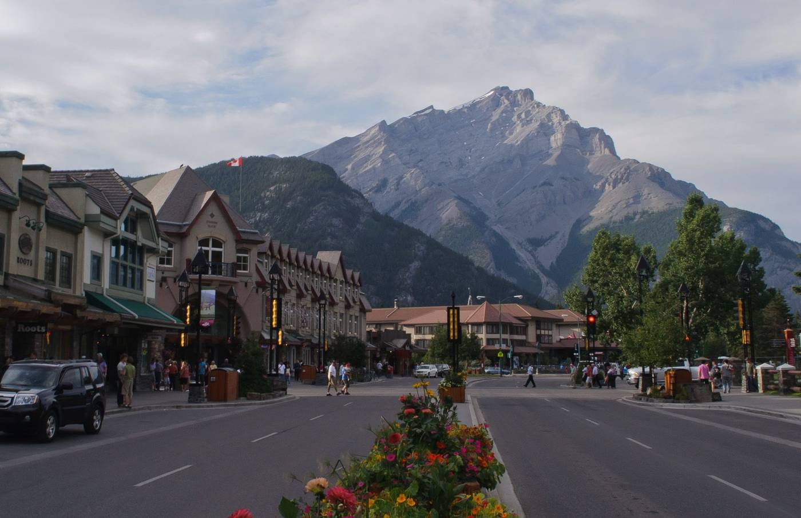
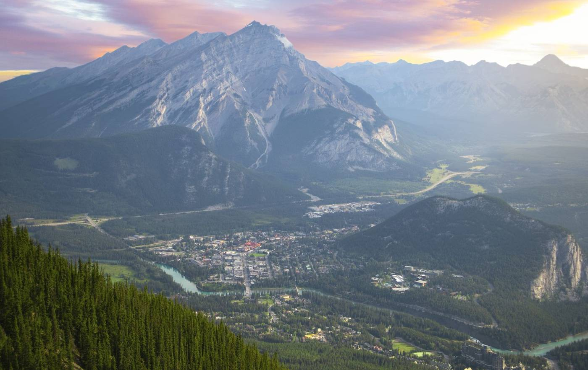
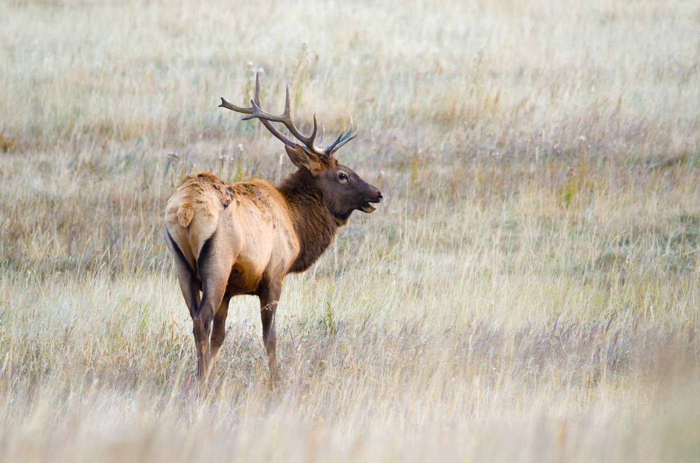

DAY 1 ✈️ Travel day
San Diego → Calgary → Banff
Sample flight shape (NOT a real booking or schedule):
🛫 ~8:00 AM leave San Diego → connect in Seattle, Denver or Vancouver → 🛬 ~3:00 PM arrive Calgary (Mountain Time, 1 hr ahead) → 🚙 pick up SUV ~4 PM → Banff by ~6 PM, in full daylight (sunset is ~10 PM).
🛫 ~8:00 AM leave San Diego → connect in Seattle, Denver or Vancouver → 🛬 ~3:00 PM arrive Calgary (Mountain Time, 1 hr ahead) → 🚙 pick up SUV ~4 PM → Banff by ~6 PM, in full daylight (sunset is ~10 PM).
- ✈️ Fly SAN → Calgary (YYC). Usually 1 stop, about 5–6 hours door to gate.
- 🛂 Entry: US citizens need a passport, but no visa and no eTA. ArriveCAN's Advance Declaration is optional (can save time at the airport kiosks).
- 🧥 Keep a fleece in the carry-on: Calgary can be in the 50s °F when we land.
- 🚙 Pick up the rental SUV and drive ~1.5 hrs west; the mountains suddenly appear out of the prairie.
- 🛍️ Evening stroll on Banff Avenue: shops, ice cream, BeaverTails, mountains at the end of every street.
- 🦌 Keep eyes open for elk wandering right through town.
🎫 Buy the Parks Canada Discovery Pass (family/group, about CA$167.50 at 2026 prices; we'd estimated ~CA$151) online before we go or at the park gate. Kids 17 and under get in free anyway.